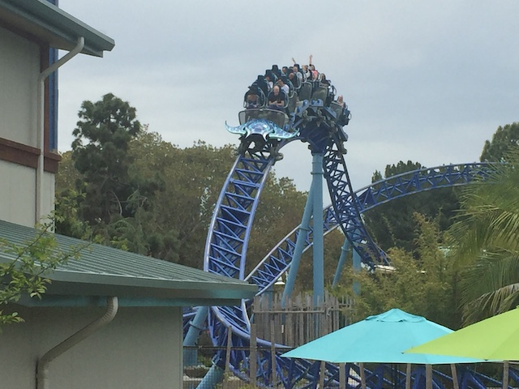
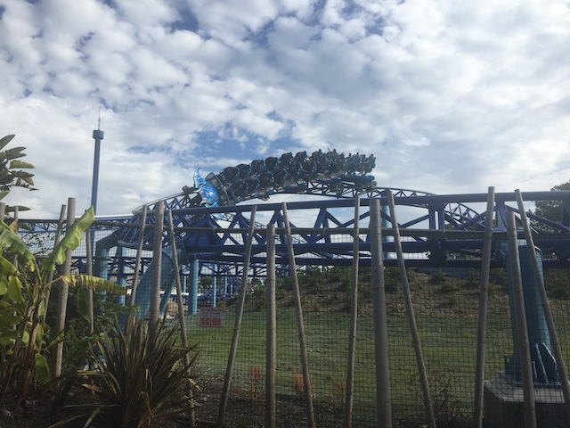
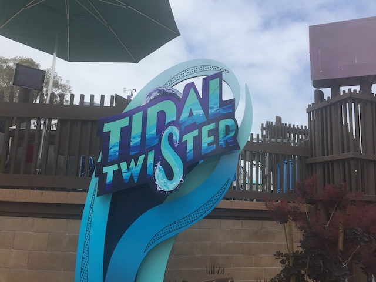
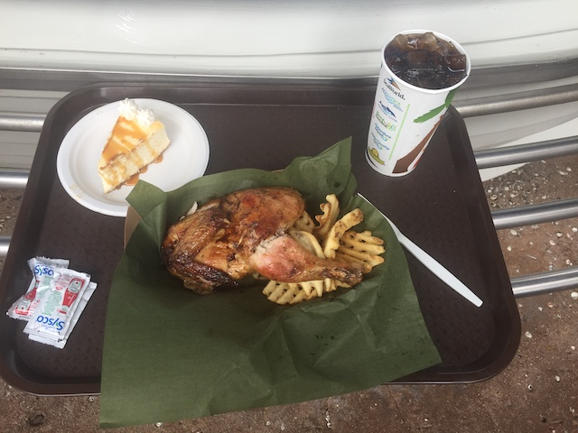
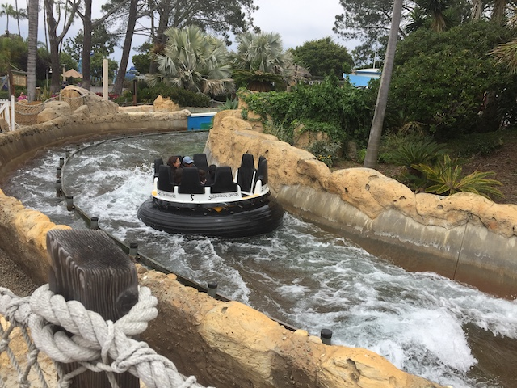
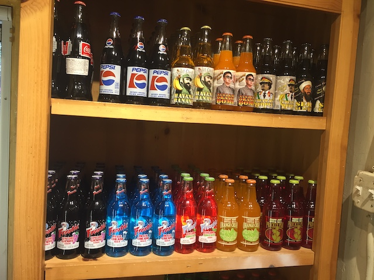

| |
Sea World San Diego 2019
 All right. We have returned once again to Sea World San Diego. I know I used to rarely go to the park, but recently, this park has been adding new additions every year. And when you throw in the fact that I have a Sea World pass this year (need it to get to a certain Busch Gardens park this summer), why not take advantage of it with multiple Sea World visits.
All right. We have returned once again to Sea World San Diego. I know I used to rarely go to the park, but recently, this park has been adding new additions every year. And when you throw in the fact that I have a Sea World pass this year (need it to get to a certain Busch Gardens park this summer), why not take advantage of it with multiple Sea World visits.
Visit #1. Hmm. I wonder what the purpose of today's visit is.
Yeah. We're here today for the Seven Seas Food Festival. This is our 3rd Theme Park Food Festival. We've done Knotts Boysenberry Festival every year and we did the Brew & BBQ event at Cedar Point. Now we're doing the Seven Seas Food Festival @ Sea World San Diego. So....let's see what sort of tasty concoctions they have here.
Ooh! Pretzal Mac & Cheese! I love Mac and Cheese, and I love pretzals. This should be awesome! =)
Unfortunately, this was the biggest dissapointment of the food festival. The mac and cheese seemed, kind of low quality. And the pretzals seemed stale. I was not impressed. =(
You know what makes a food festival even better? Beer Sampling! =)
Coasters and Beer. These are a few of my favorite things.
Just throw in travel, cliff jumping, movies, running, and we're set. =)
The food and beer is great and all, but Sea World is most well known for the animals. So...let's check that out.
"HEY WAITRESS! WE WANT OUR FISH!"
Aww. Who wants a belly rub? Shamu does! Yes he does!
The show may be over, but we'll still splash your sorry ass!
Tidal Twister construction photo.
♫Gotta love the sweet taste of India♫
The Chicken Tikka Masala was really good. This is something I would like to order a full plate of.
 Hey! Crepes are always really good. Can't go wrong with that.
Hey! Crepes are always really good. Can't go wrong with that.
This beer is so good it'll make you....never mind.
Hmm. What to do with all these flamingos.
Moving onto a new part of the world, we're trying Carribean cuisine now.
Actually nope. We're having Polynesian Cusine with Kalua Pig. It was good, but....not as good as I was hoping. I'm just not the biggest pork fan (excluding bacon).

HOLY CRAP!!! We've gone all this time in the update without a coaster!? This is IncredibleCOASTERS! We must fix that!

Don't understimate this ride. It may be small, but it has some mean laterals. =)
 So while riding Manta, we essentially broke down in the brake run between the first half and the second half. It just stopped here. So....breakdown photo! =)
So while riding Manta, we essentially broke down in the brake run between the first half and the second half. It just stopped here. So....breakdown photo! =)
Onto Visit #2. Looks like they're doing a music festival today. Hmm. Well, that's NOT why we're here today.

Nope. THIS is why we're here today.
GOD DAMN IT!!! IT'S CLOSED TODAY!!!
Yeah. Unfortunately, it was closed during ALL my Sea World visits this year. And when you combine the amount of downtime this had with the amount of downtime Harly Quinn had at SFDK, things don't look so good for Skyline.
 Well, let's go over a ride that actually does work and get more rides on Electric Eel is.
Well, let's go over a ride that actually does work and get more rides on Electric Eel is.
 I know it's just a clone, but damn it! These Premier Sky Rockets really are a ton of fun!
I know it's just a clone, but damn it! These Premier Sky Rockets really are a ton of fun!
Tell me guys! Was your ride ELECTRIFYING!!?
Hey guys! Let's go ride....Never mind.
HOLY CRAP!!! I think this may be the first time I've EVER seen that ride run!
Shipwreck Cafe for lunch everyone?

Gotta admit. The food at the Shipwreck Cafe is pretty damn good.
Sadly, the critics don't care. =(
Go ahead. Eat the chicken. Why should I care!? I'm a booby bird! Not a chicken!
Wait! Why did we leave Sea World and what are we doing in this random parking lot!?
♫Everybody get on the Midget Bus♫
So, we finished Sea World early today. And we figured....Hmm. The San Diego Fair is in town today. Why don't we just head on over there for the afternoon and check that out!? So here we are!
We got our San Diego Fair tickets! =)
This counts as our fair visit for the year.
 All right. First up, the Crazy Mouse.
All right. First up, the Crazy Mouse.
Now this is NOT just the Crazy Coaster from the L.A County Fair. This is a different model. So....I get a new credit today. Was not expecting that. =)
HOLY SH*T!!! BEST SPINNING MOUSE EVER!!! THIS THING SPINS LIKE CRAZY!!! The only Spinning Mouse that might possibly rival it is Ragin Cajun @ Six Flags America.
Damn! They have Magnum here! I haven't seen that ride since going to the Ventura County Fair!
THIS RIDE IS SO GOOD!!! COME ON PEOPLE!!! GET BETTER TASTE IN FLAT RIDES!!!
Hey look! A Huss Flipper! I've only seen one of these in Europe. These rides are fun! Happy to see one in America. Kind of regret not riding it. Oh well.
 Ooh! Looks like I'm gonna be getting another new credit today! =)
Ooh! Looks like I'm gonna be getting another new credit today! =)
 It's a Galaxy, and....it had some decent airtime. That's the good news.
It's a Galaxy, and....it had some decent airtime. That's the good news.
 Though what's up with the big sort of fence on the side of the car. Is that really necesarry?
Though what's up with the big sort of fence on the side of the car. Is that really necesarry?
Also continuing with the highlights of the L.A County Fair, we have Speed!
 Happy to report that last years lame ride on Speed was a fluke and it's back to its crazy self.
Happy to report that last years lame ride on Speed was a fluke and it's back to its crazy self.
And of course, it wouldn't be a great fair if they didn't have the Zipper.
This ride is so good *drool*.
 While ride is good, it's sadly not as crazy as it looks. Then again, I'm just spoiled by Tango, Zipper, and even Speed.
While ride is good, it's sadly not as crazy as it looks. Then again, I'm just spoiled by Tango, Zipper, and even Speed.
OMG! Those cream pies, the Reeses Pies, the Oreo Pies, the Twix Pies, etc. SO GOOD!!! DAMN IT!!! NOW I WANT ONE!!!
Man, it's been FOREVER since I last rode Windsurf! I feel like a teenager at the Ventura County Fair riding this thing again!
Honestly, this is my favorite fair. It's all the highlights of the L.A County Fair, with what few unique rides Ventura County Fair had thrown in as well. They did a really great job here.
Ahh. Good ol' Mega Drop. This ride has been at nearly all the fairs I've been to (well, all except for the Santa Barbara Fair).
Can someone please order one of these the size of Lex Luthor!? Cause the agressive way this SHOVES you down combined with Lex Luthors height would be so....*drool*.
Hmm. I wonder what we're taking the sky ride for.
Nice view of the San Diego Fair.
Oh god! We're going to the kids section! Please don't tell me we're doing what I think we're doing!
Ugh. Credit who...wait a minute! I HAVE this credit!
Yep. There is no credit whoring today since...I HAVE both of these credits.
"Hello. I'm a puppy. You will see me in your nightmares tonight." >=)
The only downside of this years fair visit was that there was no deep fried food credit or wacky fair food to try. I sort of forgot until I already ate and wasn't hungry.
Hey. We still have some tickets left over. WACKY FUN HOUSE TIME!!!
There's no movie to rip off like the Wizard of Oz. There's no movie to rip off like the Wizard of Oz.
Well, so long San Diego Fair. I had a blast, and you have some great rides. Wouldn't mind coming back some other day.
All right. And now, we're onto Visit #3.
 Hmm. They have the doctor fish spa here. Cool, but I honestly prefered having a natural one in the wild.
Hmm. They have the doctor fish spa here. Cool, but I honestly prefered having a natural one in the wild.
"HELP!!! THEY'RE EATING ME ALIVE!!!"
Hey. We still have some tickets left over. WACKY FUN HOUSE TIME!!!
 "Ugh. Plastic flamingos are so tacky any out of style. Give me a stone flamingo instead."
"Ugh. Plastic flamingos are so tacky any out of style. Give me a stone flamingo instead."
I see our stingray fan is happy to see us again. =)
Porcupines of the sea.
It's just a starfish. You expecting anything better?

You in the mood for a really good water ride? Yeah. That sounds right.
NOT AMUSED!
And yet, despite all of work Sea World does saving animals, do most animal rights groups admit that Sea World is doing a great job and teaming up with them (Aside from the one that I linked to)?
No! Most of them villify them and fight against them because they once saw a sh*tty documentary! *facepalm*
Ugh. This is why I roll my eyes at animal rights activists (At least the loud online ones. The few I've met in real life aren't like this).
Shh. Be quiet. You wanna be like a flamingo on the wall.
Hey look! Journey to Atlantis is back open from its big rehab!
 Unfortunately, the rehab for Journey to Atlantis was very dissapointing.
Unfortunately, the rehab for Journey to Atlantis was very dissapointing.
 Sure, it was a little better than when I rode it last year, but still didn't have as many effects as when I first rode it.
Sure, it was a little better than when I rode it last year, but still didn't have as many effects as when I first rode it.
There it is ladies and gentlemen! The underside of a manta ray!
Did I tell you guys that I have my very own coaster here at Sea World? Cause I do! =)
I found Dory!
So 2019 is the last year for Wild Arctic. I never really cared much about the simulator, but....still better get a final ride in.
If you're gonna put kids songs in the Billboard Top 100, pick one that isn't ear-bleedingly bad and obnoxious as f*ck. Just saying. Signed, the Beluga Whale. ;)
Don't get lost inside the ice caves now.
 Even that is outside your rent budget when shopping in California.
Even that is outside your rent budget when shopping in California.
Hey? Are you sad because you're an unlikable asshole? I don't hate you. I feel sorry for you. You should cheer yourself up by giving this porcupine a hug.
"SQUAK!!! STOP PROCRASTINATING AND HUG THAT PORCUPINE ASSHOLE!!!"
You know, sea turtles sounds good.
Yo. How's it going? I'm a sea turtle.
"I found another ride here at Sea World San Diego!"
Hmm. There's something off about that....IT'S A SEAL!!!
This seal certainly likes all the attention he's getting here.
BARK BARK BARK!!! MAKE ME A STAR!!!
Nope. Sea Lions only. No seals allowed.
The hills are alive with the sound of "ARF ARF ARF!!!".
 I got the flamingos AND Manta. =P
I got the flamingos AND Manta. =P
King of the Ocean. Just right behind this measly glass.
"I swear to god. If you even think of playing that song, I will kill and eat you out of sheer F*CK YOU!!!"
Did any Megaladons lose their teeth?
Well, that's enough Sea World for the day. Where are we off to now?
Why not go and check out Old Town San Diego.
Love the old school architecture thay have here.
Spencer and Haddy, this is for you.
I know Dr. Pepper Jelly Beans are good. But....Beer flavored Jelly Beans? You sure this isn't some Bertie Botts sh*t?

Surprisingly, we are NOT in Rocket Fizz right now.
Ooh. Pretty flowers.
♫Time for Tea♫
 Now I'm not a big cotton candy fan. Out of all the unhealthy terrible for your body delicous carnival foods, cotton candy is towards the bottom. But some of these flavors are...WTF!? Kind of want to try some of these now.
Now I'm not a big cotton candy fan. Out of all the unhealthy terrible for your body delicous carnival foods, cotton candy is towards the bottom. But some of these flavors are...WTF!? Kind of want to try some of these now.
"YOU SPENT HOW MUCH AT SEA WORLD!!?"
Though seriously, this was a super fun year at Sea World. I had a ton of fun at the park at the park, rode some great rides, saw some cool animals, and even had a great fair visit as well. Yeah, it's a bummer that I didn't get on Tidal Twister this year, but...oh well. I haven't heard good things about that ride anyway. I'll get on it next year (very soon), and I know there's many things to look foreward to at Sea World next year. =)
Home
|